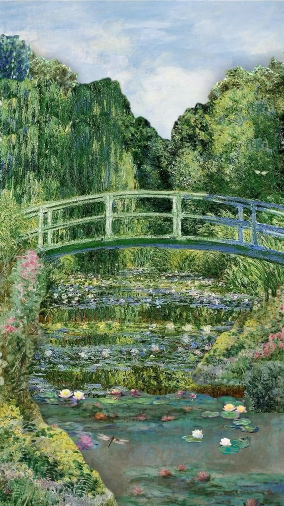
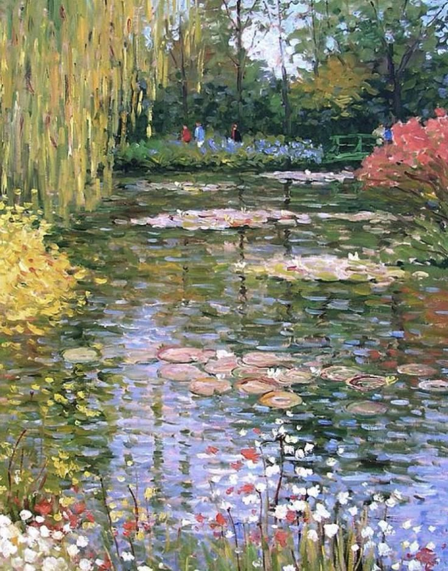
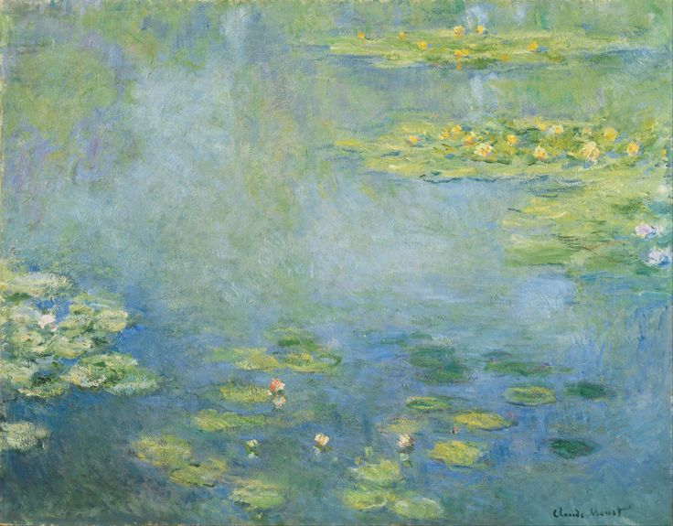
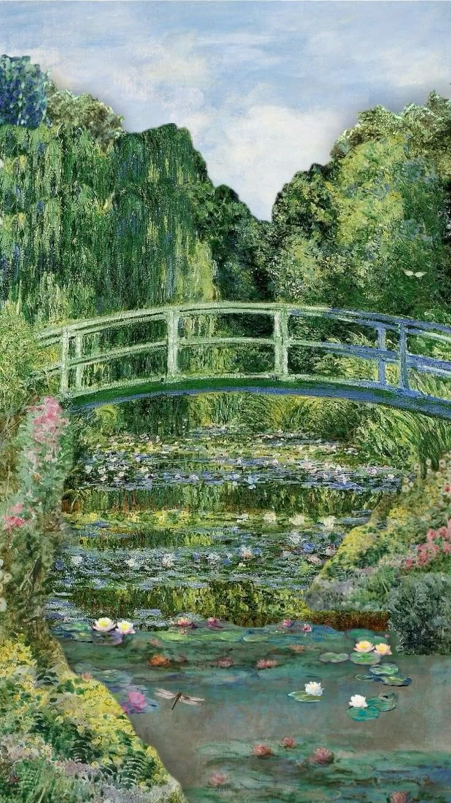
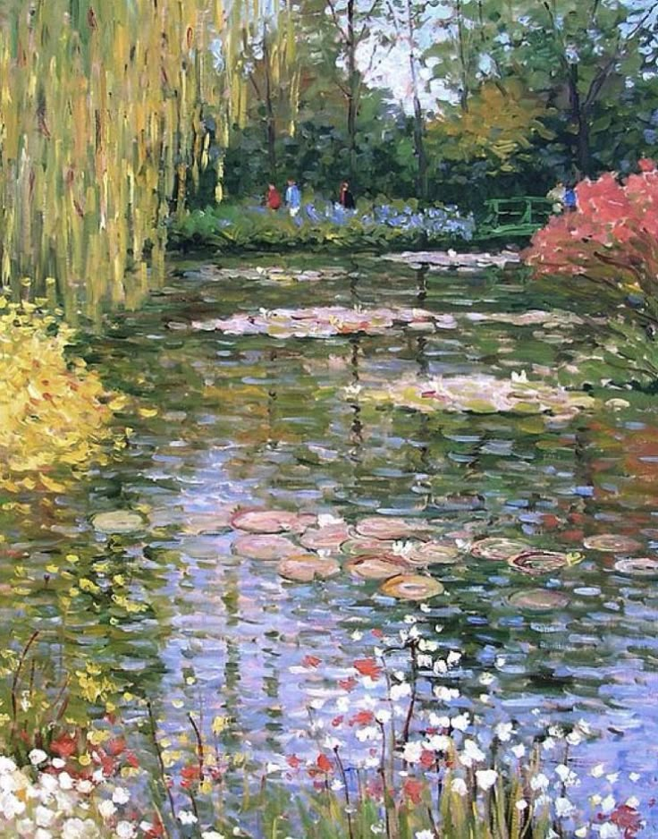
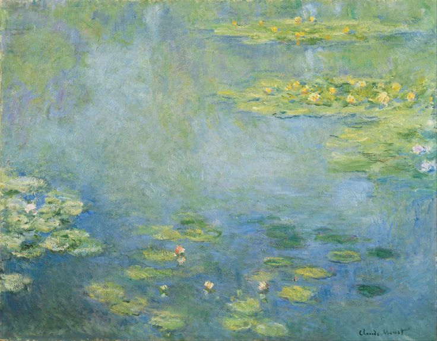
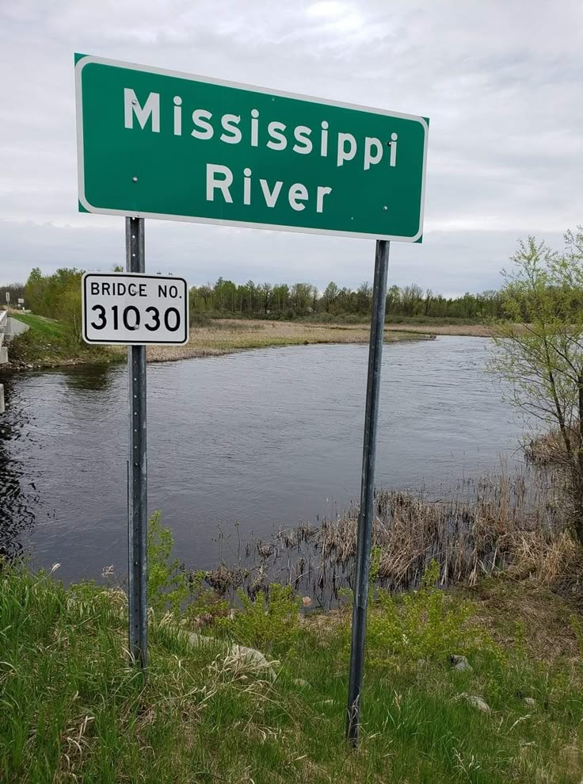
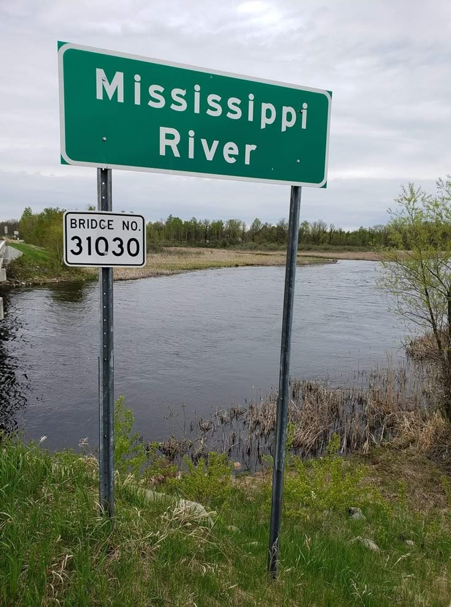

Avatar: The Last Airbender is an animated television series that aired on Nickelodeon from 2005 to 2008. It follows the journey of Aang, the last surviving Airbender and the Avatar, who must master all four elements (water, earth, fire, and air) to bring peace to a world divided by war.
Personally, if I had to pick an element to bend, it would be water! I loved seeing the flow of water illustrated across the screen. The abilities granted from being a water bender is so cool - healing people would come in handy.
The French painter was born on 14th of November, 1840 in Paris. Notable for being the founder of Impressionism painting, his consistent practise of impressionism's philosophy can be shown in his landscape paintings of nature.
Claude Monet created a series of around 250 oil paintings called 'Water Lilies'. These paintings depict his flower garden at his home in Giveny, France which were the main artistic focus in the last thirty years of his life. Some of the following images are from that collection.
 







 
